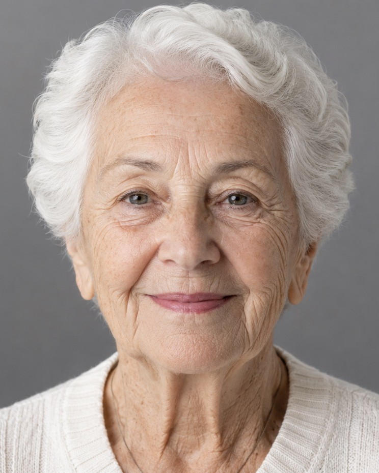
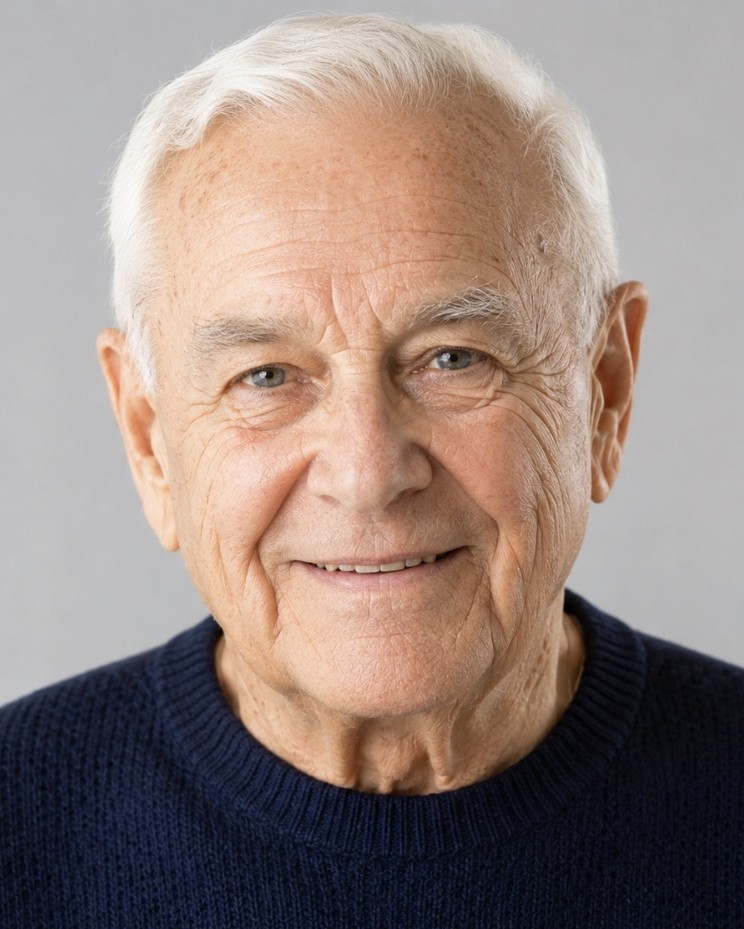

A portrait of a life, in the words that describe them.
Every remembrance below is composed entirely of the words a family would choose — a name, the roles they filled, the way they were loved. Drag to see the change, and tap any portrait to read the words up close.


Drag the handle · tap the portrait to read the words
A few remembrances
Up close you read the words that tell their story; from across the room, you see them. Tap any portrait to look closely.


And another, in his words
A father, a grandfather — his face drawn from the words his family chose. Drag to see the change.


Made to be kept
Printed on archival stock and framed, it becomes a quiet place for the eyes to rest — at the service, in the home, on the wall for years after.
Every print includes the high-resolution digital file, free — to reprint, to share with family, or to keep close on a phone.
One photo, told three ways
Choose the feeling that fits them — and a calm palette to match a memorial program or the room it will hang in.
From your own words
Nothing generic — every portrait is built from the words only a family can give.
Free to preview
See the finished portrait before you pay. There's no cost until it feels right.
Private & gentle
The photo stays private and is never shared. Made with care for a tender moment.
Free to create and preview — there's no cost until you decide to order. Your photo stays private, and nothing is shared.